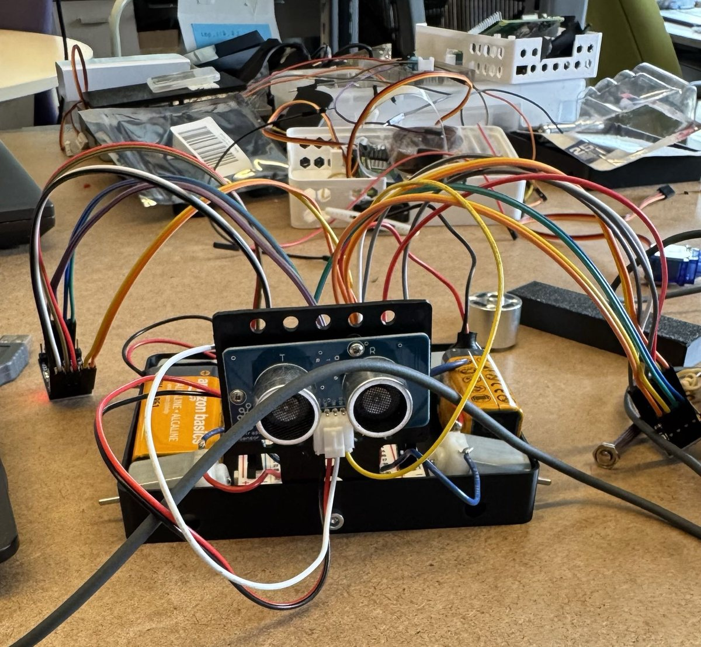
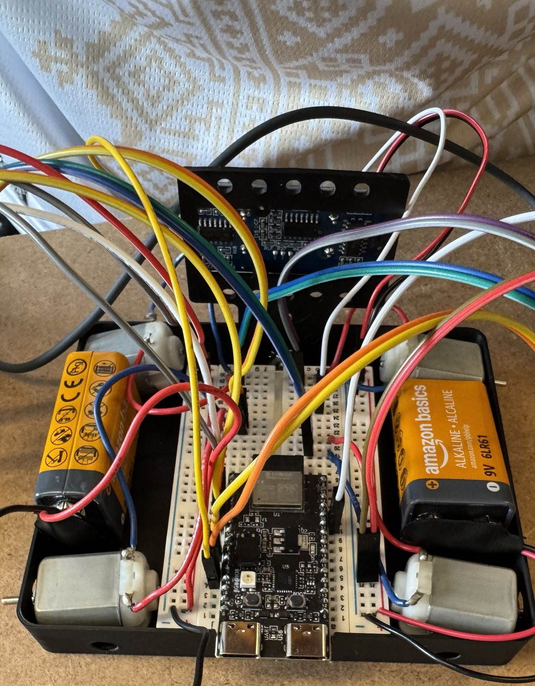

Project · Personal · Work in progress
Maze-Solving Robot
A small ESP32 robot built to solve a maze on its own. Then the goal moved: make several of them solve it together.


Where it started
This began as a deliberately small build: a mini maze-solving robot, cheap parts, no kit. An ESP32 as the brain, DRV8833 motor drivers running plain brushed DC motors, and ultrasonic sensors reading the walls — enough to do wall-following and dead-end detection without any luxury hardware to hide behind.
Where it's going
After building the autonomous-fleets challenge at the IDEAS Clinic, the goal shifted. A single robot solving a maze is a known problem; what I actually want now is a fleet of these solving one together — splitting the maze between them, sharing what each has already explored, and converging on a route faster than any one robot could alone.
That's a much less forgiving target on hardware this cheap. It means honest odometry from motors with no encoders worth trusting, a wireless link between robots that survives a room full of noise, and a shared map that doesn't fall apart when two robots disagree about where a wall is.
The build
- ESP32 — chosen specifically for the built-in Wi-Fi, which is the whole reason the fleet version is plausible.
- DRV8833 dual H-bridge drivers for the DC motors, with PWM speed control off the ESP32.
- HC-SR04 ultrasonic sensors for wall distance and obstacle detection.
- Currently breadboarded and battery-powered — the wiring is a mess on purpose, since the pinout is still changing.
Status
Active build. Single-robot navigation is the working baseline; the fleet coordination layer is what I'm on now. Related: Toyota Challenge — Autonomous Fleets.